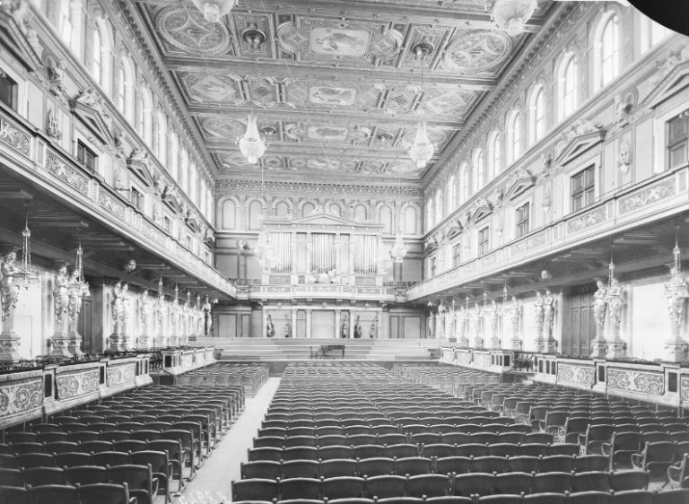
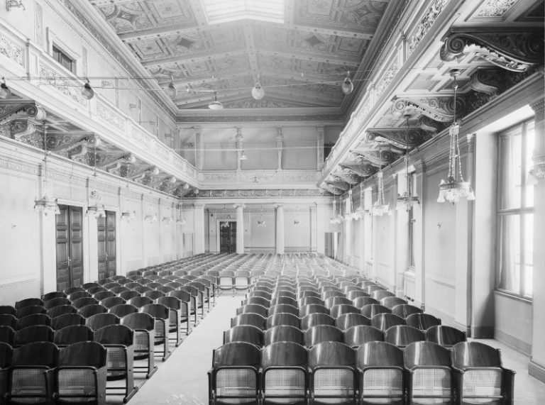
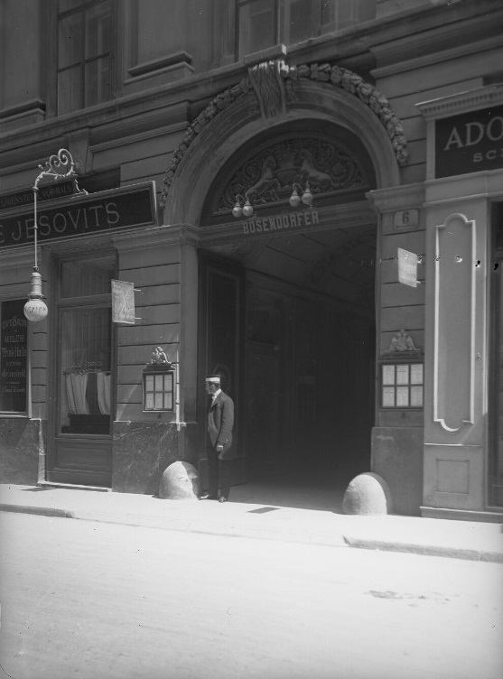
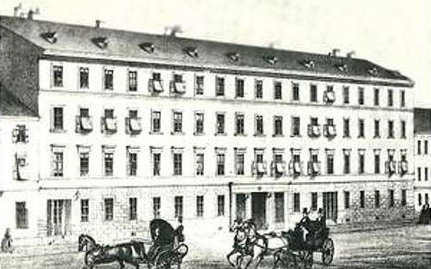
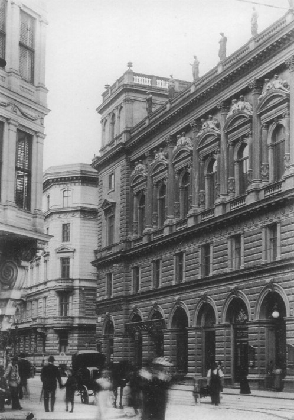
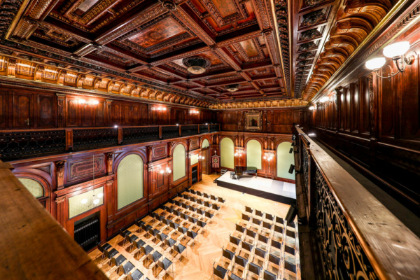
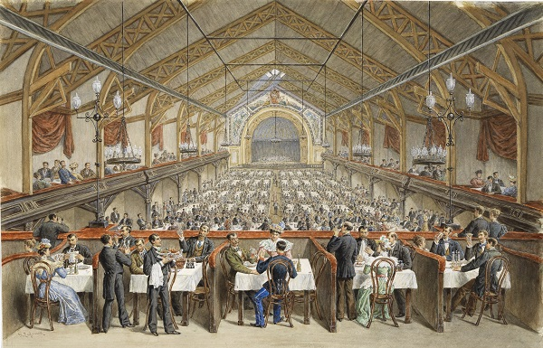

Aufführungsorte
Johannes Brahms zog 1862 nach Wien, wo er zwei seiner seltenen Anstellungsverhältnisse einging:
Wo konnten Künstler ihre Werke im Wien des 19. Jahrhunderts einem Publikum präsentieren? Bedeutende Aufführungsstätten für musikalische Darbietungen waren vor allem die Musikvereinssäle der Gesellschaft der Musikfreunde, die Salons Bösendorfer, Ehrbar und Streicher, für „volksbildende“ Konzerte bevorzugt der Festsaal des Österreichischen Ingenieur- und Architektenvereins sowie für populäre Konzerte Weigl’s Dreherpark in Meidling.
Musikvereinssäle
Adresse: Musikvereinsplatz 1, 1010 Wien
Eröffnung: 1870
Die 1812 gegründete „Gesellschaft der Musikfreunde“ eröffnete 1870 ein eigenes, von Stararchitekt Theophil Hansen errichtetes Gebäude, welches mit zwei Konzertsälen ein Novum in der Musikstadt Wien darstellte.
Der Große Musikvereinssaal (Goldener Saal):

Großer Musikvereinssaal © ÖNB
Der Kleine Musikvereinssaal (seit 1937 „Brahms-Saal“):

Kleiner Musikvereinssaal © ÖNB
Salon Bösendorfer
Adresse: Herrengasse 6, 1010 Wien (Palais Liechtenstein) Eröffnung: 19. November 1872

Palais Liechtenstein, Herrengasse 6, 1. Bezirk – Durchgang zum Salon Bösendorfer, 1913 © ÖNB / Lichtbildstelle
Ludwig Bösendorfers Saal stellte bis zum Abbruch des Palais Liechtenstein 1913 die akustisch wohl beste Aufführungsstätte für Kammermusik dar, die Wien zu bieten hatte. Ob Kammermusik oder Lieder- und Klavierabende, viele der auftretenden Künstler zählten zur Crème de la Crème der damaligen Konzertwelt, darunter Franz Liszt, Eugen d’Albert, Johannes Brahms, Anton Rubinstein, Pablo Sarasate, Emil Sauer, Ernst von Dohnányi, Alice Barbi, Anton Sistermans, Julius Epstein, das Hellmesberger- und das Rosé-Quartett u.v.m. Mit einem Konzert des Rosé-Quartetts endete schließlich am 9. November 1913 die ruhmreiche Geschichte des Bösendorfersaales, der in den 41 Jahren seines Bestehens rund 4.500 Konzerten Raum geboten hatte. Eine Gedenktafel am Standort des ehemaligen Bösendorfersaales erinnert noch heute an den akustisch wohl bedeutendsten Konzertsaal, den die Stadt Wien jemals besessen hat.
Salon Ehrbar
Adresse: Mühlgasse 30, 1040 Wien
Eröffnung: 1867
Der Ehrbar-Saal wurde 1867 im Auftrag des Klavierfabrikanten Friedrich Ehrbar errichtet und ist noch heute weitestgehend im Originalzustand erhalten. Eine der prominentesten Künstler traten hier auf, wie etwa Johannes Brahms, Anton Bruckner, Max Reger, Pietro Mascagni, Josef Helmesberger, Ignaz Brüll, Joseph Joachim, Anton Rubinstein und Gustav Mahler.
Salon Streicher
Adresse: Ungargasse 27, 1030 Wien
Eröffnung: 1812

Salon Streicher © https://wien-landstrasse.nak.at/portrait
Der Klavierfabrikant Andreas Streicher veranstaltete ebenfalls Konzerte in seinen Räumlichkeiten. Der 1812 eingeweihte Streichersaal diente u.a. den Komponisten Johannes Brahms und Julius v. Beliczay als Bühne. Erst gegen Ende des 19. Jahrhunderts begann der Name Streicher aus dem Musikleben Wiens zu verschwinden und mit ihm auch die Bedeutung des Salons Streicher.
Festsaal des Österreichischen Ingenieur- und Architektenvereins
Adresse: Palais Eschenbach, Eschenbachgasse Nr. 9, 1010 Wien
Eröffnung: 1872

Gebäude des Ingenieur- und Architekten-Vereins (1902) © http://www.karl-kraus.net/Bilder/Ingenieur_Architektenverein.jpg
Das Haus Eschenbachgasse Nr. 9 wurde nach Plänen des Architekten Otto Thienemann zwischen 1870 und 1872 als Vereinshaus für den Österreichischen Ingenieur- und Architekten-Verein (ÖIAV) errichtet. Der Festsaal im 2. Obergeschoss mit seiner wertvollen Wand- und Deckenausstattung wurde auch für musikalische Veranstaltungen herangezogen. Das Gebäude selbst ist noch heute im Wesentlichen in seiner Originalsubstanz erhalten.

Festsaal der ÖIAV © https://www.oiav.at/haus-der-ingenieure/
Weigl’s Dreherpark
Adresse: Dreherpark, Schönbrunner Straße 307, 1120 Wien
Eröffnung: 5. Juli 1886

Gustav Zafaurek: Katharinenhalle im Dreher-Park, um 1885 © Sammlung Wien Museum, CC0, Inventarnummer HMW 16714
1884 erwarb der Bierbrauer Anton Dreher der Jüngere den Park in der Schönbrunner Straße, der einst Adeligen wie Josefa Gräfin Chancloir, Nikolaus Esterházy, Georg von Erdödy oder Stephan und Franziska Gräfin Liechtenstein gehörte. Er verpachtete diesen ab 1886 an den Gastwirt Johann Weigl, der hier das Schwechater Bier Drehers ausschenkte und ein Vergnügungsetablissement eröffnete: Weigl’s Dreherpark.
Mit einer Liedertafel des Wiener Männergesangvereins startete das Unternehmen, welches 1894 durch eine rund 4.000 Personen umfassende Halle erweitert wurde. Diese 1892 eigens für die „Musik- und Theaterausstellung“ im Wiener Prater errichtete Katharinenhalle wurde von Dreher erworben, abgetragen und in Meidling wieder aufgebaut. Hier fanden in der Folgezeit bis zu ihrem Abbruch im Jahr 1925 Aufführungen unterschiedlichster Ausrichtung statt, von Varietévorstellungen über Zirkusdarbietungen bis hin zu Ringkämpfen, aber auch populäre Orchesterkonzerte und Liedertafeln.